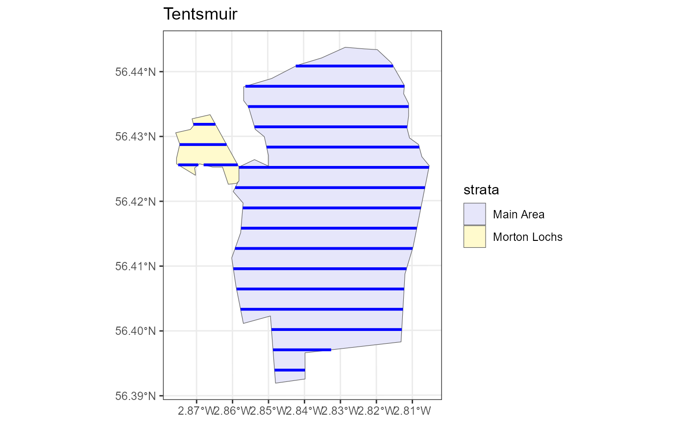

This function will write a set of transects to file, either as a shapefile or gpx file, or it will write the transect coordinates (centre points for point transects or end points for line transects) to a comma-separated values 'csv' file or a text file 'txt' with tabular spacing between columns. For line transects which have been split across geographical features (such as islands or lakes) there will be two or more rows in the csv / txt file with all rows having the same transect ID.
Arguments
- object
an object inheriting from class Transect. Alternatively, for all file types except gpx an sf spatial object can be supplied.
- dsn
the data source name, currently a filename with a 'shp' 'csv', 'txt' or 'gpx' extension.
- layer
a character vector specifying the layer name, only required for gpx files.
- dataset.options
a character vector of options, which vary by driver, and should be treated as experimental. Used to specify "GPX_USE_EXTENSIONS=yes" for writing gpx files.
- overwrite
whether or not existing files should be overwritten. Only applicable when writing to gpx files.
- proj4string
The projection you wish the coordinates of the output file to be in. Note, when writing to gpx file the transect coordinates must be in latitude and longitude.
Details
To write the transects to file usually only the dsn is needed with a 'shp', 'csv' or 'txt' file extension. To write a gpx file you need to specify the dsn and a projection so allow the coordinates to be transformed. back into latitude and longitude.
Examples
# Note that for CRAN testing purposes all files written in example code must
# be written to a temporary directory, to view this location type tempdir().
# It is however advised that you replace the tempdir() commands in the code
# below to a more easily accessible directory to which the files will be
# written.
# Make the default design in the default study area
design <- make.design()
transects <- generate.transects(design)
write.transects(transects, dsn = paste0(tempdir(), "/", "transects.shp"))
#> writing: substituting ENGCRS["Undefined Cartesian SRS with unknown unit"] for missing CRS
#> Writing layer `transects' to data source
#> `C:\Users\erexs\AppData\Local\Temp\RtmpcRwX7b/transects.shp' using driver `ESRI Shapefile'
#> Writing 20 features with 2 fields and geometry type Line String.
# Writing csv file example
write.transects(transects, dsn = paste0(tempdir(), "/", "transects.csv"))
# Writing txt file example
write.transects(transects, dsn = paste0(tempdir(), "/", "transects.txt"))
# Writing gpx file example - must project transect coords into lat/lon
#Load the unprojected shapefile
shapefile.name <- system.file("extdata", "TentsmuirUnproj.shp", package = "dssd")
sf.shape <- sf::read_sf(shapefile.name)
# Check current coordinate reference system
orig.crs <- sf::st_crs(sf.shape)
# Define a European Albers Equal Area projection
proj4string <- "+proj=aea +lat_1=56 +lat_2=62 +lat_0=50 +lon_0=-3 +x_0=0
+y_0=0 +ellps=intl +units=m"
# Project the study area on to a flat plane
projected.shape <- sf::st_transform(sf.shape, crs = proj4string)
# Create the survey region in dssd
region.tm <- make.region(region.name = "Tentsmuir",
strata.name = c("Main Area", "Morton Lochs"),
shape = projected.shape)
design <- make.design(region = region.tm,
transect.type = "line",
design = "systematic",
samplers = 20,
design.angle = 90)
survey <- generate.transects(design)
plot(region.tm, survey)

write.transects(survey,
dsn = paste0(tempdir(), "/", "transects.gpx"),
layer = "lines",
proj4string = orig.crs)
#> Writing layer `lines' to data source
#> `C:\Users\erexs\AppData\Local\Temp\RtmpcRwX7b/transects.gpx' using driver `GPX'
#> Writing 19 features with 0 fields and geometry type Multi Line String.